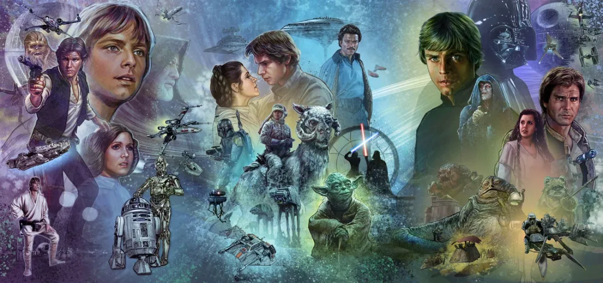

A Long Time Ago Was Not a Setting: Why Star Wars Works as Fantasy

The opening crawl of A New Hope begins with "A long time ago in a galaxy far, far away." Not in the future, not in space as we currently understand it, but long ago. George Lucas was not making a film about where humanity is going. He was making a myth, and the spaceships and laser swords are set dressing for the oldest structure in storytelling: a farm boy from nowhere discovers he has a destiny, finds a mentor, loses him, faces an ancient evil, and chooses what kind of person he wants to be. This is not science fiction. It is fantasy, and the distinction matters more than most discussions of the franchise are willing to acknowledge.
Science fiction, as a genre, asks what happens to human beings when technology or circumstance changes the conditions of existence. 2001: A Space Odyssey asks what happens when humanity creates something it cannot control. Blade Runner asks what makes consciousness worth protecting. These films use their speculative elements to interrogate something about the present or the future. Fantasy works differently. Fantasy is concerned with what is worth fighting for, what forces exist in the world beyond rational explanation, and what it costs to become the person the story requires you to be. The Force is not a technology but magic, one that follows rules only insofar as the story needs it to, and when it works, it works because it feels true rather than because it has been explained.
Lucas was explicit about his influences, and the list is telling: Joseph Campbell's The Hero with a Thousand Faces served as a direct blueprint for Luke's arc, Kurosawa's The Hidden Fortress shaped the structure of A New Hope, and the Jedi draw from samurai tradition and Zen philosophy. The mythology is assembled from older mythologies, which is precisely what the best myths do. The result is a story that feels familiar without being derivative, because the archetypes it draws from are so deeply embedded in how human beings process narrative that recognition is nearly automatic. Audiences who had never seen a fantasy film before knew what Luke Skywalker was the moment he picked up a lightsaber. They had always known.
The Force is the clearest illustration of why the fantasy reading matters. In the original trilogy, it is described in exactly the terms it needs: it surrounds us, it binds the galaxy together, and some people are more sensitive to it than others. That is the entire description, and it is enough, because the Force is not meant to be a technology with quantifiable properties. It is meant to be felt. When Obi-Wan first describes it to Luke, it works because it sounds ancient and half-understood rather than technical and measurable. The Jedi are not scientists. They are a monastic order preserving access to something that was always there. The prequels introduced a biological explanation for Force sensitivity, and the effect was immediate and deadening: a faith that can be disproven with a blood test is not a faith at all. That single choice clarifies, by contrast, why the original trilogy's restraint was never an oversight. It was the whole point.
The characters are archetypes in the classical sense, which means they carry the weight of every version of this story that has come before them. Luke is the farm boy who wants more than his life, which is the oldest fantasy opening there is. The scene where he watches the twin suns set over Tatooine does not require dialogue or exposition to land. It lands because that specific feeling, standing at the edge of your known world and wanting something beyond it, is embedded so deeply in human storytelling that the image alone is enough. Han Solo is the cynic who discovers he believes in something. Leia is not rescued; she is the one running the rescue. Vader is the fallen knight whose redemption forms the mythological spine of all three films. None of this requires explanation because none of it is new. It is ancient, and the trilogy knows it.
What fantasy does that science fiction typically does not is offer moral clarity without sacrificing emotional complexity. The conflict in the original trilogy is between light and dark, and that binary is not a flaw in the writing. It is the point. Fantasy is allowed to have a clear sense of what is worth fighting for, and the original trilogy uses that clarity to make its emotional beats hit harder. When Luke throws away his lightsaber in front of the Emperor in Return of the Jedi, refusing to fight even as his father stands ready to kill him, it is the purest fantasy climax imaginable: the hero wins not through force but through belief. The Death Star exploding is spectacle. That moment in the throne room is the actual ending.
The original trilogy works because it trusts its mythology without explaining it. We do not need to know the history of the Jedi Order to feel the weight of Obi-Wan's sacrifice. The galaxy is treated as a place that has been ancient for a long time, full of ruins and history we will never fully know, and that incompleteness is part of the texture. Fantasy does not require comprehensive world-building. It requires a coherent set of stakes and a hero whose choices reveal character. The original trilogy has both, and it has held up for nearly fifty years because the story it is telling is not really about a galaxy far away. It is about the same things every myth has always been about: where you come from, what you choose, and whether that is enough.